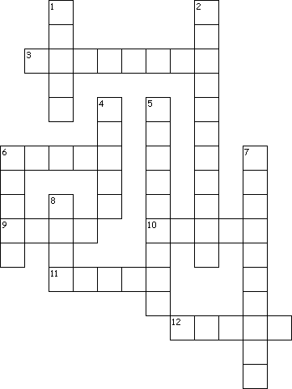

This week's lessons: Numbers 21:4-9, Psalm 107:1-3, 17-22, Ephesians 2:1-10, John 3:14-21
This
week's lessons: Numbers
21:4-9, Psalm
107:1-3, 17-22, Ephesians
2:1-10, John
3:14-21
Middle-School Pew-work
|
 |
When have you given up something you really love in order to help someone else out? ... Or, not given it up, and afterwards wished you had? What resulted from your choice? _________________________________________________________________________________________________________________________________________________________________________________________________________________________________________________________________________________________________________________________________________________________________________________________________________________________________________________________________________________________________________________________________________________________________________________________________________________________________________________________________________________________________________________________________________________________________________________________________________________________________________________________________________________________________________________________________________________________________________________________________________ |
|
|---|---|---|
Across
3. snakes
6. "light bread"
9. Esau's land
10. basic food
11. land of
slavery
12. basic drink
|
Down 1. "of fire" 2. felt hopeless 4. early metal 5. deadly injury 6. Israelites' leader 7. Where the people wandered 8. serpent-holder |
|
Next week: Jeremiah 31:31-34 , Psalm 51:1-12 or Psalm119:9-16, Hebrews 5:5-10, John 12:20-33